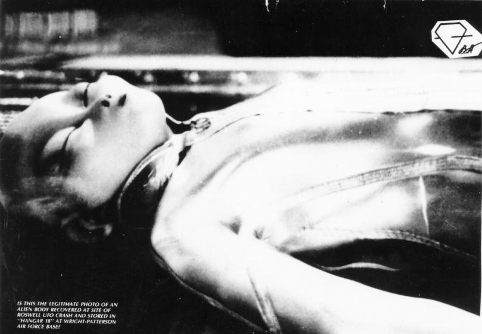

Un photo est souvent présentée comme celle d'un extraterrestre récupéré du crash de Roswell. De mauvaise qualité, en noir et blanc.
On retrouve en fait le même personnage photographié de côté, dans des photos de meilleure qualité et en couleur.
Le personnage ne serait en fait qu'un mannequin préparé pour une exhibition.
Le , l'émission de télévision italienne MIXER présente cette photo, recadrée pour cacher la combinaison de plongée du mannequin, sans dire qu'il s'agit d'une reconstitution. Le lendemain, le CISU rappelle dans un communiqué qu'il s'agit d'un mannequin fabriqué pour la reconstitution cinématographique canadienne de l'affaire de Roswell et exposé au Pavillon du monde insolite de Montréal (Canada), mais l'émission rediffuse la même séquence le , exemple de la propagation du mythe ovni par les médias .
